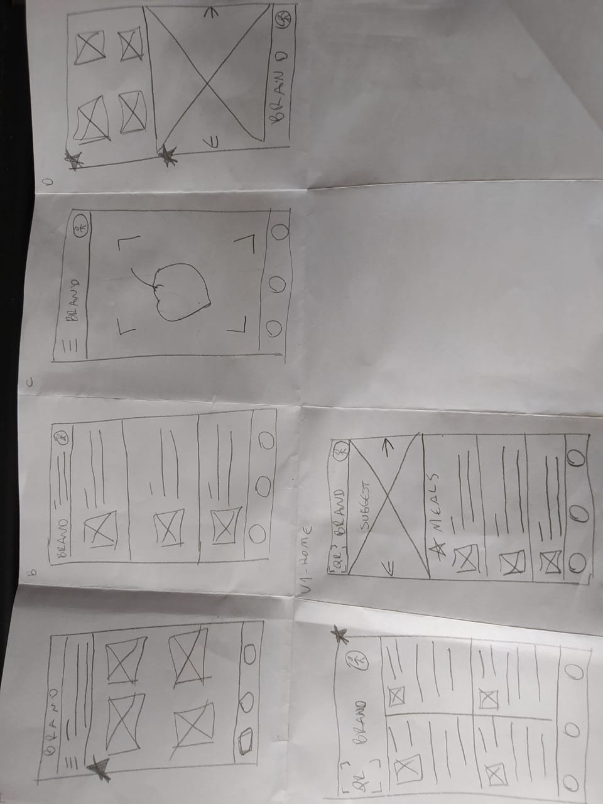
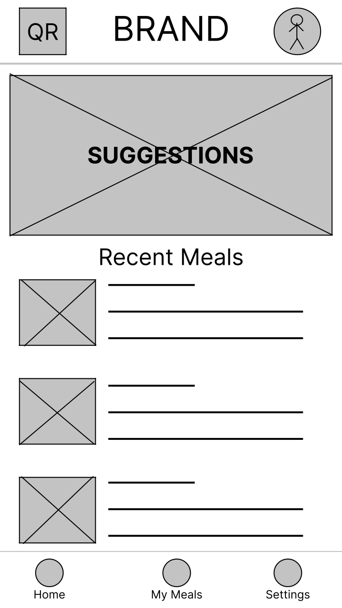
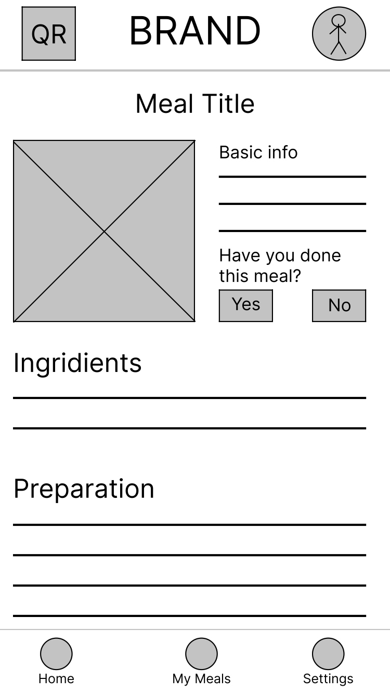
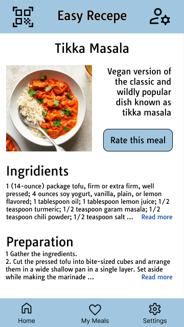

Welcome!

This was one of my projects for the Google UX Design certification. So, I was the Lead Designer (and only member of the project), taking care of the following responsibilities: Research, Ideation, Prototyping, and Testing.
 Nutrition Tracking Mobile App
Nutrition Tracking Mobile App
This was one of my projects for the Google UX Design certification. So, I was the Lead Designer (and only member of the project), taking care of the following responsibilities: Research, Ideation, Prototyping, and Testing.
The goal of this project was to design an app that helps people in finding healthy meals as well as preparing them quickly.
The target audience of this project was people interested in receiving help to create healthy meals.
In summary, I identified three main challenges this project's audience face.
- Time: People want to prepare their meals quickly.
- Budget: People lack budget to pay a nutritionist to help them with their meals.
- Knowledge: People lack to ability to find out which meals are healthy for them.
To identify the specific audience of this project, as well as their challenges, I started this project by conducting interviews. Then, I created empathy maps to understand potential users as well as their needs. Mainly, I found potential users are interested in having healthy meals, but they lack time to prepare them as well as budget to pay a nutritionist to help them find what to eat.
Aiming to address users' pain points, at first, I created some design ideas, which are shown next:

Next, I evolved those initial concepts to digital wireframes, as shown in the image below.


My usability study aimed to answer whether i) users able to successfully find healthy meals, ii) what are the difficulties users face in finding a healthy meal they enjoy, and iii) what actions users try to do but the app doesn't support. Mainly, I found that: Users think the homepage information architecture is confusing; Users were frustrated for not being able to actually provide the feedback; Users had difficulty in identifying where to click to provide feedback.
Based on the usability study results, I revised my designs and created the following Mockups addressing those findings:

While working in this project, I learned how a well-planned design process can make raw ideas about how to solve user problems become a product that indeed solves users’ pain points. If implemented, the app would allow users to get healthy meals recommended to them and provide detailed instructions on how to quickly prepare these meals.
Want to know more about this project? Please don't hesitate to contact me at luiz.r70@gmail.com!